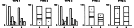
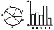

This post concerns Cleveland and McGill (1984), Cleveland and McGill (1985), Cleveland and McGill (1986), and Cleveland and McGill (1987).
Experiments performed
- position-length (1984)
- 55 subjects, 5 types of charts 
- Comparisons
- Grouped bar charts: second and third bars of the left group or second bars of the two groups.
- Stacked bar charts: bottom divisions of the two bars or in the top divisions of the two bars or in the top divisions of the left bar.
- Type 1-3: position on common scale, Type 4-5: length
- Composition of bars
- Values \(s_i = 10 \times 10^{(i - 1)/12}, i = 1, ..., 10\),
r round(10* 10^((0:9)/12), 3) - Subjects judged ratios of 10 pairs of values ranging from 0.18 to 0.83; each pair of values judged 5x (one per comparison type)
- Other segment heights chosen at random subject to constraints to prevent common-scale judgments.
- Values \(s_i = 10 \times 10^{(i - 1)/12}, i = 1, ..., 10\),
- Procedure for a graph:
- indicate which was smaller
- judge what percentage the smaller was of the larger
- only 4 errors in which bar/segment was smaller
- Kits
- Charts on 8.5x11 page, filling a large portion of the page
- 5 practice graphs (one of each type) + 50 graphs in random order
- all packets identical
- position-angle (1984)
- 54 subjects, 2 types of charts 
- Comparisons:
References
Cleveland, William S., and Robert McGill. 1984. “Graphical Perception: Theory, Experimentation, and Application to the Development of Graphical Methods.” Journal of the American Statistical Association 79 (387): 531–54. https://doi.org/10.1080/01621459.1984.10478080.
———. 1985. “Graphical Perception and Graphical Methods for Analyzing Scientific Data.” Science 229 (4716): 828–33. https://doi.org/10.1126/science.229.4716.828.
———. 1986. “An Experiment in Graphical Perception.” International Journal of Man-Machine Studies 25 (5): 491–500. https://doi.org/10.1016/S0020-7373(86)80019-0.
———. 1987. “Graphical Perception: The Visual Decoding of Quantitative Information on Graphical Displays of Data.” Journal of the Royal Statistical Society. Series A (General) 150 (3): 192. https://doi.org/10.2307/2981473.